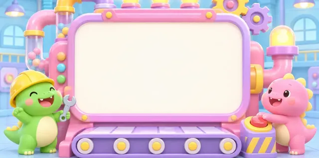
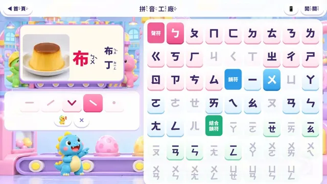
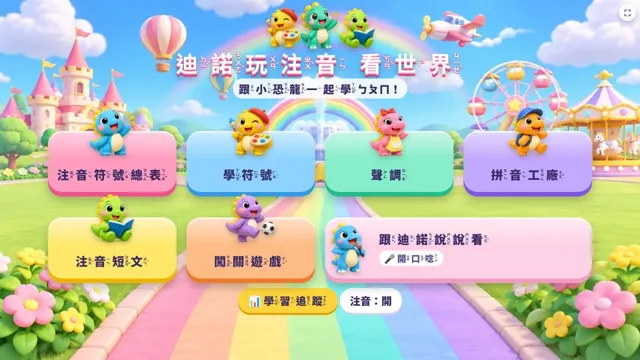
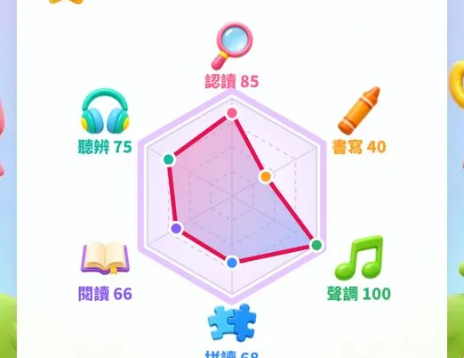

迪諾玩注音看世界（中英雙語版）

🗺️ 目錄 四個部分，十八個重點
第一部分 認識迪諾樂園這套 App 是什麼、裡面有什麼
01迪諾玩注音看世界是什麼？第二部分 學注音六個學習單元，從符號到故事、遊戲
02注音符號總表：一張表全認識03學符號：看、描、寫，連結合韻符一起學04聲調：高高低低一看就懂05拼音工廠：按一按，字就拼出來06注音短文：十個繪本小故事07闖關遊戲：十個遊戲等你挑戰08闖關遊戲（一）：聽、寫、拼、認09闖關遊戲（二）：分辨、拼字、打字、閱讀第四部分 貼心設計中英切換、真人發音、直式橫式、學習追蹤
14中英切換：學注音，同時學一千多個英文單字15真人發音：每個音都聽得清楚16手機、平板、電腦：直拿橫拿都好用17學習追蹤：能力分析雷達圖18交給小朋友，自然就學會迪諾玩注音看世界是什麼？

「迪諾玩注音看世界」是一套完整的注音學習系統：六個學習單元，加上開口唸的「跟迪諾說說看」。三十七個注音符號、二十二個結合韻符、一千多張真實照片、十個繪本小故事、十個闖關遊戲，符號和拼讀都用真人錄音，手機、平板、電腦直拿橫拿都能用。小朋友從一個符號學起，邊玩邊學，用注音看世界、說世界。 🔊
📱 App 實際畫面
💬 迪諾老師和小安怎麼說
小安迪諾老師，ㄅㄆㄇ好多個，我都記不起來，怎麼辦？
迪諾老師別擔心！我帶你來玩「迪諾玩注音看世界」。學注音就像逛恐龍樂園一樣好玩！
小安看世界？
迪諾老師對！不只學注音，還要開口，用注音把看到的世界說出來。
迪諾老師樂園裡有七個單元：注音符號總表、學符號、聲調、拼音工廠、注音短文、闖關遊戲，還有開口唸的「跟迪諾說說看」。我們一站一站去看！
注音符號總表：一張表全認識

三十七個注音符號和二十二個結合韻符全部排在一張表上，每一格都有代表語詞和真實照片。點一格，就用真人錄音拼讀給孩子聽；也可以從頭播放，整張表一路聽下去。代表語詞都重新挑選過，像ㄤ用「糖果」而不是「太陽」，讓孩子聽清楚這個符號自己的音。 🔊
📱 App 實際畫面
💬 迪諾老師和小安怎麼說
迪諾老師第一站是注音符號總表。三十七個注音符號和二十二個結合韻符，全部排在一張表上。
小安每一格都有照片耶！有鼻子、螃蟹，還有飛機！
迪諾老師點一格，就會唸給你聽：ㄅ、ㄧˊ、鼻、鼻子。也可以按「從頭播放」，整張表一路唸下去。
迪諾老師往下還有結合韻符和聲調，一張表全部看得到。
小安邊看邊聽，一下子就認得了！
學符號：看、描、寫，連結合韻符一起學
每個符號都有自己的學習頁：先看筆順動畫，再照著紅點和箭頭描寫，最後在空白格子自己寫，系統會幫孩子打星星。學完三十七個符號，後面還有二十二個結合韻符，用真人錄音唸成一個音，並示範寫法。每個符號另有常用字彙卡，配上真實照片和拼讀。 🔊
📱 App 實際畫面
💬 迪諾老師和小安怎麼說
迪諾老師第二站是學符號。從第一個符號開始，一個一個慢慢學。
小安它會寫給我看嗎？
迪諾老師會！先「看筆順」，看它一筆一筆寫出來。
迪諾老師再「描寫」，照著紅點和箭頭描；最後「自己寫」，寫完還會幫你打星星。
小安我要拿三顆星！
迪諾老師學完三十七個符號，後面還有二十二個結合韻符，像ㄧㄚ、ㄨㄛ，唸成一個音，也看得到怎麼寫。
迪諾老師每個符號還有「常用字彙」：糖果、棒棒糖、螃蟹……整個樂園搭配了一千多張真實照片，學注音的同時，也認識了這個世界。
聲調：高高低低一看就懂

一聲、二聲、三聲、四聲和輕聲，用「媽、麻、馬、罵、嗎」帶孩子聽出差別。每個聲調都畫出聲音高低的線條，點一下就能聽。 🔊
📱 App 實際畫面
💬 迪諾老師和小安怎麼說
迪諾老師第三站是聲調。一聲、二聲、三聲、四聲，還有輕聲。
小安媽、麻、馬、罵、嗎！
迪諾老師對！點一下就能聽，還能看到聲調的線條怎麼走，聲音高高低低一看就懂。
拼音工廠：按一按，字就拼出來


選一個聲符、一個韻符，再按下聲調，機器就把字做出來，用真人錄音唸出拼讀，還秀出語詞和照片。拼不出字的鍵會自動變暗，孩子怎麼按都成功。闖關模式有十張訂單，全部完成就是金牌廠長。 🔊
📱 App 實際畫面
💬 迪諾老師和小安怎麼說
迪諾老師第四站是我最喜歡的拼音工廠！選一個聲符，再選一個韻符，最後按下聲調，機器就開動了。
小安我按ㄅ，再按ㄨ，再按四聲……出來了！ㄅ、ㄨˋ、布！布丁的布，還有照片！
迪諾老師每按一個鍵，都會唸出它的聲音；拼不出字的鍵會自動變暗，所以怎麼按都拼得出來。
小安右上角的「闖關」是什麼？
迪諾老師那是工廠的訂單挑戰！客人送來十張訂單，你聽聲音把字拼出來。全部完成，就能當上金牌廠長！
注音短文：十個繪本小故事


十個押韻的小故事，每篇都有繪本插圖。畫面只顯示注音，讓孩子練習看注音讀故事。可以全文朗讀、單句練習、語詞練習，還能把一個字拆成聲符、韻符和聲調來聽。 🔊
📱 App 實際畫面
💬 迪諾老師和小安怎麼說
迪諾老師第五站是注音短文，有十個小故事，每一個都有漂亮的繪本圖畫。
小安有《爸爸抱抱》、《大頭龍》、《章魚吃西瓜》……我想聽《大頭龍》！
迪諾老師按「全文朗讀」，故事一句一句唸，唸到哪裡，畫面就亮到哪裡。
小安這裡只有注音，沒有國字耶。
迪諾老師因為這一站要練的就是看注音讀故事。還有單句練習、語詞練習，和「單字拆解」：把一個字拆成聲符、韻符和聲調，一個一個聽。
闖關遊戲：十個遊戲等你挑戰


十個闖關遊戲，每關九十秒，都有自己的小故事和場景。聽音、認符號、寫字、拼音、聲調、打字、閱讀，全部都練得到，還會記錄最高分和星星。 🔊
📱 App 實際畫面
💬 迪諾老師和小安怎麼說
小安終於到遊戲了！
迪諾老師這裡有十個闖關遊戲，每一關九十秒，聽、認、寫、拼，全部都玩得到。我們一關一關看！
闖關遊戲（一）：聽、寫、拼、認

前五關練基本功：聽聲音找符號、動手寫符號、把聲符韻符和聲調拼起來、聽出第幾聲、看照片找注音。 🔊
📱 App 實際畫面
💬 迪諾老師和小安怎麼說
迪諾老師第一關「聽音孵蛋」：聽聲音，點對那顆蛋，小恐龍就孵出來。
迪諾老師第二關「火山石板寫字」：火山要爆發了！把聽到的符號寫出來，鋪出逃生的石板路。
小安這一關是練寫字！
迪諾老師第三關「拼音小火車」：聽聲音，選出聲符、韻符和聲調，火車才能出發。
迪諾老師第四關「聲調溜滑梯」：聽聽看是第幾聲，選對滑梯，滑進水池。
迪諾老師第五關「看圖找注音」：看照片，找出正確的注音卡。
闖關遊戲（二）：分辨、拼字、打字、閱讀

後五關再進階：分辨容易混淆的聲音、找出拼得起來的組合、照著菜名一個字一個字拼、用注音鍵盤打字、在句子裡找出不見的字。 🔊
📱 App 實際畫面
💬 迪諾老師和小安怎麼說
迪諾老師第六關「雙胞胎過河」：ㄓ和ㄗ、ㄕ和ㄙ，聽起來好像，踩對石頭才能過河。
小安這一關可以練耳朵！
迪諾老師第七關「注音釣魚」：看岸上的聲符，釣起可以和它拼成字的魚。
迪諾老師第八關「恐龍廚房」：客人點菜了，聽菜名，一個字一個字選出注音。
迪諾老師第九關「流星注音鍵盤」：流星上是什麼符號，就按鍵盤上同一個符號，保護恐龍村。
小安這樣連注音打字都學會了！
迪諾老師第十關「故事尋寶」：故事書少了一個字，聽句子，把不見的字找回來。
回音山谷：聽迪諾唸，換你唸，聽回音


第七個單元「跟迪諾說說看」讓孩子開口，有回音山谷、餵恐龍、聲調飛行三種玩法。回音山谷分成符號、語詞、句子三級：先聽迪諾唸，再按「我來唸」錄下自己的聲音，山谷會把聲音回給你聽，再聽一次迪諾，自己給星星。也可以按「全部朗讀」連續聽，用上一個、下一個前後切換。使用時需要允許麥克風。 🔊
📱 App 實際畫面
💬 迪諾老師和小安怎麼說
迪諾老師第七站是「跟迪諾說說看」，有回音山谷、餵恐龍、聲調飛行三種玩法。
小安可是我只會看，不太敢唸出來。
迪諾老師那就先到回音山谷！聽我唸一次，再按「我來唸」，把你的聲音錄下來。
小安山谷真的把我的聲音回給我了！
迪諾老師聽聽自己唸的，再聽一次我唸的，比一比像不像，然後給自己星星。
迪諾老師從符號、結合韻符，到語詞、句子，都可以這樣練。想一直聽下去，就按「全部朗讀」。
把世界說出來：用注音說出一千多樣東西
按下「把世界說出來」，App 裡一千多個有照片的語詞全部排進來：動物、食物、交通工具、身體、大自然、日常動作……小朋友看著真實照片，用注音一個一個唸出來。學注音不只是認符號，而是用注音看見世界、說出世界。 🔊
📱 App 實際畫面
💬 迪諾老師和小安怎麼說
小安語詞只有這些嗎？
迪諾老師按下「把世界說出來」，一千多張真實照片一張一張出現。
小安哇，世界上的東西我都可以用注音唸出來！
迪諾老師沒錯。看到什麼，就說出什麼，這就是用注音看世界、說世界。
迪諾老師還可以整句整句唸，把故事也說出來。
餵恐龍：看照片，說出來

九十秒的開口遊戲。畫面出現照片，小朋友大聲說出語詞，說對了恐龍就張大嘴把卡片吃掉。裝置支援語音辨識時會自動聽；不支援時，說完聽迪諾唸一次，再自己按「我說對了」。 🔊
📱 App 實際畫面
💬 迪諾老師和小安怎麼說
迪諾老師恐龍肚子餓了！看照片，大聲說出它的名字。
小安我說出來，恐龍就把卡片吃掉了！
迪諾老師九十秒看你能餵幾張。說不出來可以按「提示」，聽我唸一次。
聲調飛行：看得見的聲調


小朋友說出「媽、麻、馬、罵」，麥克風抓到聲音的高低，畫成一條黃色的線，小恐龍跟著這條線飛。照著白色虛線飛，飛得像就得到星星，還會提示聲音該往上還是往下。 🔊
📱 App 實際畫面
💬 迪諾老師和小安怎麼說
迪諾老師聲調飛行！白色的線是這個聲調該走的路。
小安我說「媽」，小恐龍就照著我的聲音飛起來了！
迪諾老師一聲平平的，二聲往上，三聲先下再上，四聲往下。看著線說，一下就懂。
中英切換：學注音，同時學一千多個英文單字
首頁下方有三個按鈕：「中文」、「中文＋English」、「English」，按一下就切換。選「中文＋English」，畫面還是中文和注音，每張照片、每個語詞下面多了英文意思，短文每一句也有英文翻譯，總共一千一百多個英文單字。按英文就唸英文，按照片或中文就唸中文。選「English」，整個畫面和說明都變成英文。學習紀錄三種模式共用，隨時可以切換。 🔊
📱 App 實際畫面
💬 迪諾老師和小安怎麼說
小安迪諾老師，首頁下面多了三個按鈕耶！
迪諾老師對！按「中文加英文」，每張照片、每個語詞下面，都會多出英文意思。
小安鼻子下面有英文，螃蟹下面也有英文！我按英文，它就唸英文給我聽！
迪諾老師按照片或中文，就唸中文。一邊學注音，一邊就學會一千一百多個英文單字。
迪諾老師短文的每一句也有英文翻譯。
迪諾老師如果按最右邊的按鈕，整個畫面都會變成英文喔。
真人發音：每個音都聽得清楚


符號和拼讀的聲音不是機器合成的。三十七個注音符號、二十二個結合韻符，還有一千三百多個帶聲調的音節，都是真人老師錄音。拼讀時先唸聲符，再唸帶聲調的韻符，最後唸出整個音節，例如「ㄊ、ㄤˊ、糖」，孩子聽到的是清楚、自然的發音。 🔊
📱 App 實際畫面
💬 迪諾老師和小安怎麼說
小安迪諾老師，這些聲音是誰唸的？好清楚喔！
迪諾老師是真人老師一個一個錄的！三十七個符號、二十二個結合韻符，還有一千三百多個帶聲調的音節。
迪諾老師拼讀的時候，先唸聲符，再唸帶聲調的韻符，最後唸出整個音：ㄅ、ㄨˋ、布。
小安結合韻符也是唸成一個音，不是兩個音硬拼起來的！
迪諾老師對，這樣聽到的才是最自然的發音。
手機、平板、電腦：直拿橫拿都好用

手機直拿是直式畫面，橫拿就變成橫式；平板和電腦也一樣，畫面會跟著方向自動切換，並放大到整個螢幕。每一頁都把畫面留給內容，標題列和按鈕縮到最小，照片和符號看得更大。 🔊
📱 App 實際畫面
💬 迪諾老師和小安怎麼說
小安我家有手機，也有平板，都可以玩嗎？
迪諾老師都可以！手機、平板、電腦都能用。直著拿是直式，橫著拿，畫面就自動變成橫式。
小安橫的畫面好大，照片看得好清楚！
迪諾老師每一頁都把空間留給內容，按鈕縮得小小的，符號和照片就能放得大大的。
迪諾老師十個遊戲也一樣，橫著玩更過癮。
學習追蹤：能力分析雷達圖


孩子學了多少、哪裡強哪裡弱，App 會自動記錄。學習總覽列出學過的符號、寫字星星、讀過的故事和遊戲次數；能力分析用雷達圖呈現認讀、書寫、聲調、拼讀、閱讀、聽辨六種能力，並建議接下來多玩哪些遊戲。紀錄存在這台裝置上。 🔊
📱 App 實際畫面
💬 迪諾老師和小安怎麼說
小安迪諾老師，我學得怎麼樣，看得出來嗎？
迪諾老師看得出來！首頁有「學習追蹤」，學過幾個符號、拿到幾顆星、讀了幾個故事，全部都會記下來。
小安這個六角形是什麼？
迪諾老師那是能力分析雷達圖，把認讀、書寫、聲調、拼讀、閱讀、聽辨六種能力畫出來，哪裡強、哪裡要加強，一看就知道。
迪諾老師它還會建議接下來多玩哪幾個遊戲，爸爸媽媽也能看到每個遊戲的最高分和答對率。
交給小朋友，自然就學會

認符號、學寫字、練聲調、拼字、讀故事、玩遊戲，再加上開口說，一套就完整。爸爸媽媽只要把「迪諾玩注音看世界」交給小朋友，他自然就全部都會了，也認識了全世界。 🔊
📱 App 實際畫面
💬 迪諾老師和小安怎麼說
小安認符號、學寫字、練聲調、拼字、讀故事、玩遊戲，還能開口說……學注音真的太好玩了！
迪諾老師是啊！爸爸媽媽只要把「迪諾玩注音看世界」交給小朋友，他自然就全部都會了。
小安而且我還能用注音把世界說出來！
迪諾老師迪諾玩注音看世界，用注音看世界、說世界，我們樂園裡見！